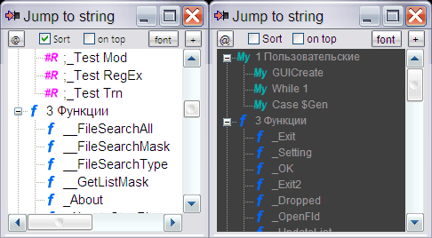

JumpToString
Назначение
Устаревшая утилитка, специализированный инструмент для AutoIt3. Многие IDE имеют такой инструмент из коробки.

Взаимосвязанные
FindAllReferences
Утилитка для быстрого перехода к функциям (Func), регионам (#Region) и пользовательским образцам текста в редакторе Notepad++. Функции и регионы попадают в список автоматически, а образцы текстов можно добавить по клавише Ctrl+F11 или кнопкой "+". Утилита сохраняет пользовательские функции для каждой вкладки Notepad++ и автоматически обновляет список при переключении вкладок.
При добавлении образца используя Ctrl+F11, если выделить текст, то попадает выделенная часть в поисковой запрос, а если не выделить, то вся строка в которой находится курсор попадает в поисковой запрос. Сбить поиск может удаление однотипного образца в коде, или редактирование строки, которая входит полностью в поисковой шаблон.
Команда запуска в \AutoIt3\Notepad++\shortcuts.xml по горячей клавише Ctrl+F12
<Command name="panel_function" Ctrl="yes" Alt="no" Shift="no" Key="123">"$(NPP_DIRECTORY)\..\AutoIt3.exe" "$(NPP_DIRECTORY)\Instrument_azjio\JumpToString\JumpToString.au3"</Command>